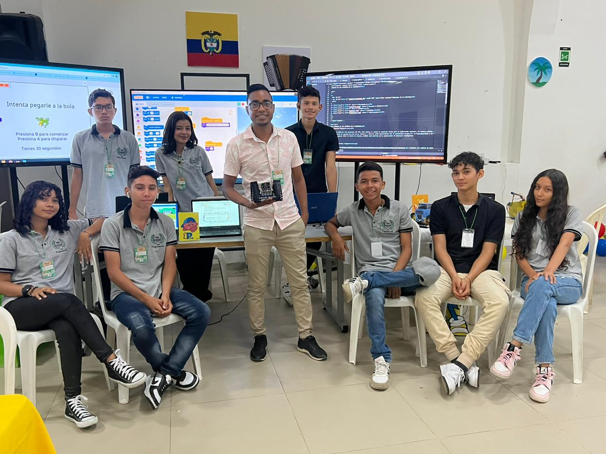

Esta especialidad busca formar a los estudiantes en habilidades necesarias para afrontar la transformacion digital que se esta viviendo en el mundo. Fundamentos de programación con PseInt, diagramas de flujo, programar tus propios juegos con Scratch, crear páginas web y darles estilo, es lo que aprenderán en esta especialidad.
LEMA: "Contribuir al medio ambiente es una forma sana de supervivencia ambiental"
Quien escoja esta especialidad saldrá capacitado para realizar proyectos ecoturísticos
y ambientales, es decir, proyectos que consideren el cuidado del medio ambiente, dando a conocer
nuestras montañas, la magnifica serranía del Perijá, cascadas y zonas campesinas. Ademas manejará
correctamente los residuos sólidos dentro del medio ambiente.